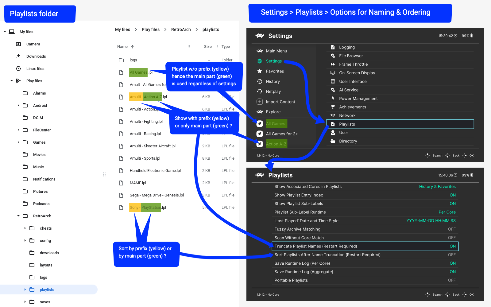
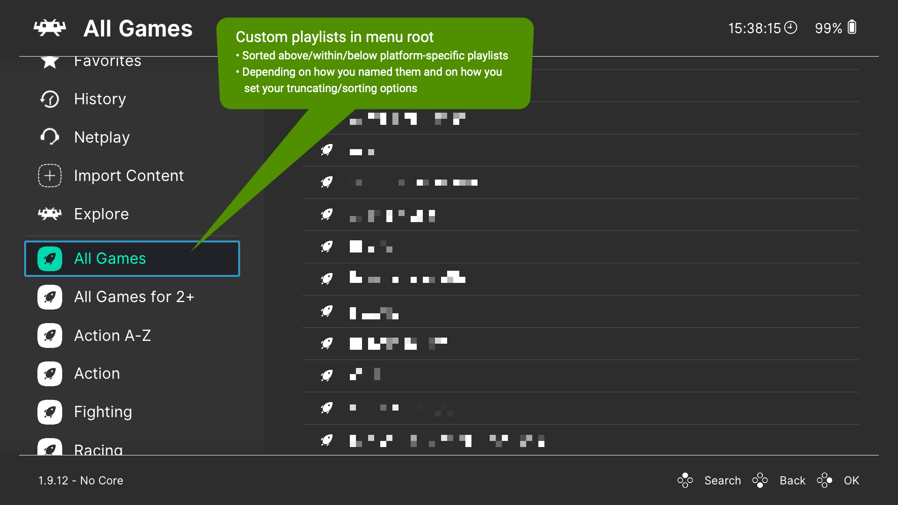
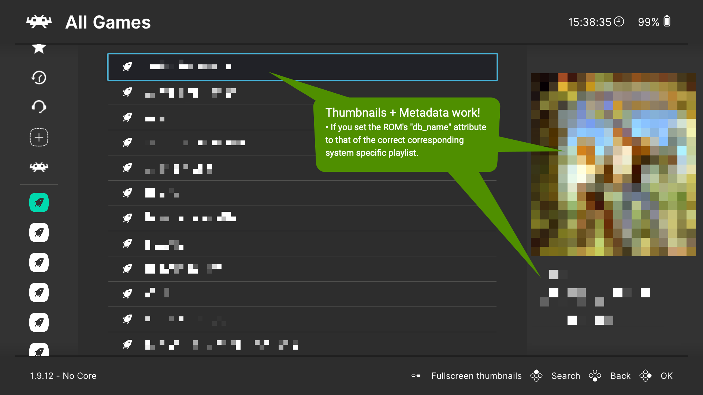
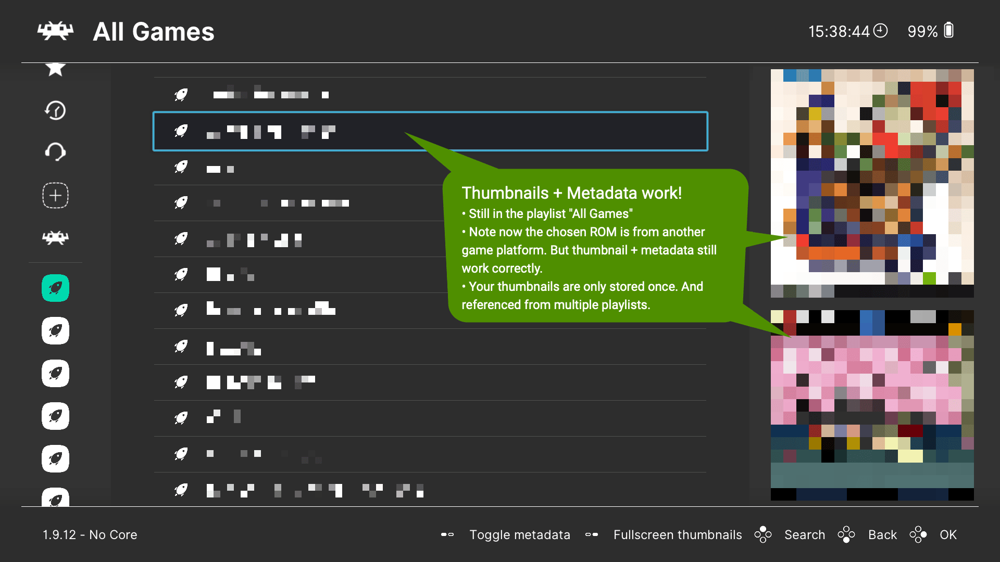
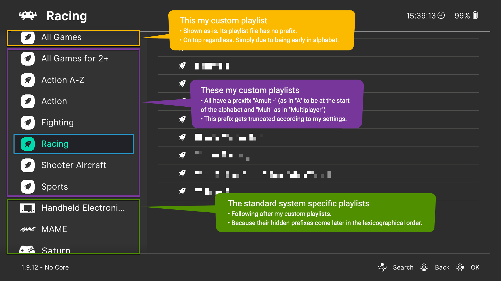

ROMs, Playlists, and Thumbnails¶
Storing games and other content¶
Game ROMs are the source media of the games that can be played using RetroArch cores. They can be actual dumps of read-only memory, tape/floppy/compact disc images, or some other format. The ROM files may be placed anywhere in the file system where RetroArch has access - note that some platforms (notably Android) are not able to browse the full storage. It is practical if the file browser start directory is configured to the directory where ROMs are stored.
Many users sort their ROMs into subfolders named after the system which the ROMs belong to, which results in a folder arrangement such as:
roms/
Atari - 2600/
Atari Game 1.zip
Atari Game 2.zip
Atari Game 3.zip
Nintendo - Nintendo Entertainment System/
NES Game 1.zip
Sega - 32X/
32X Game 1.zip
32X Game 2.zip
etc.
etc.
This arrangement is not required and you are free to organize your ROMs as you prefer.
Also, as a general guideline, content from disc-based systems (Compact Disc images, etc.) should not be zipped for RetroArch use.
Working with Playlists¶
Playlists are the lists of games and other content that can be generated automatically by the RetroArch playlist scanner, generated by a third-party playlist utility or script, or edited by hand in a text editor.
RetroArch Playlist Scanner¶
RetroArch incorporates a ROM scanning system to automatically produce playlists. Each ROM that is scanned by the playlist generator is checked against a database of ROMs that are known to be good copies.
To ensure that scanning can use all available information:
- Have a compatible core already downloaded and installed (or enable Scan Without Core Match during scanning)
- Update
Core Info FilesviaOnline Updater - Update
DatabasesviaOnline Updater - Restart RetroArch if any of the above was just done
The default fully automatic scan is strict, the content CRC checksum or disc serial must match existing databases from the libretro-database. If those conditions are met but content is still not being added automatically to a playlist, consider submitting an issue report on github.
Scan conditions could be relaxed ("loose scan"). If there is no database match, the content is still playable (as long as the respective core supports them), but may lack thumbnails and do not appear in the Explore menu.
Designating which core to use¶
RetroArch will attempt to detect and use the correct core for use with the ROMs that are used as part of a playlist. Under some circumstances, it may be useful to manually set a particular core for one of its playlists. This can be accomplished within the Playlists submenu in the RetroArch settings.
The Explore menu¶
RetroArch provides an Explore menu which can be used for browsing all content that were added to playlists using any database attribute - release year, genre, etc.
Thumbnails¶
RetroArch can display three types of thumbnails (small still pictures) for games in playlists:
- In-game snapshots
- Title screen snapshots
- Boxart

Most menu drivers support displaying two pictures when browsing the playlist. Displayed thumbnail types can be configured system-wide and also per playlist. All menu drivers can display fullscreen thumbnails when pressing Start, and Y button (left) can be used to cycle between available pictures.
Thumbnails can be retrieved in multiple ways:
- Playlist thumbnail downloader (recommended): under Online Updater menu, all available thumbnails can be downloaded for a playlist. RetroArch will connect to http://thumbnails.libretro.com and retrieve the available thumbnail.
- WARNING: the Playlist Thumbnails Updater process will over-write custom thumbnails set by the user for any game that has an associated thumbnail on the server.
- Individual thumbnail downloader: there is a Download Thumbnails option for each entry in playlists. For RetroArch version 1.17.0 or later, you may hit download up to 3 times to try the flexible matches.
- On-demand thumbnail downloader: if the respective option is enabled, RetroArch will try to download each thumbnail as the playlist is browsed. For RetroArch versions 1.17.0 or later, you may try flicking back and forth between entries up to 3 times to try the flexible matches. By default, on-demand thumbnail downloader does not try to fetch thumbnails based on ROM name, enable Settings / Playlist / Use filenames for thumbnail matching options for that.
Thumbnail packs are no longer available, use one of the above methods, or see Custom Thumbnails section below.
Playlist File Format Details¶
Each playlist is a plain text file with an extension of .lpl. RetroArch 1.7.5 and later uses a JSON playlist format, although the backwards compatibility remains for the deprecated "6-Line" playlist format.
Note: The paths in playlist files need to use the correct 'slash' character for the user's platform. Linux, OS X, and Android systems including Lakka and LudOS require forward slashes /, while Windows and DOS systems require backslashes \.
Hint for Windows Users
The built-in Notepad editor cannot work with cross-platform text files such as RetroArch playlist files. Many users and developers recommend the free Notepad++ as a replacement although most alternative text editors will also work.
JSON Playlist Format¶
The following example is a single-entry MAME 2003-Plus playlist for Alien Arena -- the silent version of this game is available through the RetroArch Content Downloader found in the Online Updater menu.
The romset with the label Alien Arena is located at path being C:\retroarch\downloads\alienar.zip; note that the backslashes are doubled in JSON-formatted playlist entries so that the value of the path entry is C:\\retroarch\\downloads\\alienar.zip.
The ROM's corresponding db_name is MAME 2003-Plus.lpl which tells the menu driver which ROM database to use for looking up the game's metadata, thumbnails and game-system-specific icon-type. Menu drivers which implement playlist icons will use it to display it next to the ROM's name.
MAME 2003-Plus.lpl¶
{
"version": "1.0",
"items": [
{
"path": "C:\\retroarch\\downloads\\alienar.zip",
"label": "Alien Arena",
"core_path": "DETECT",
"core_name": "DETECT",
"crc32": "01ACE2AB|crc",
"db_name": "MAME 2003-Plus.lpl"
}
]
}
Alert
You can omit the CRC or Serial for a manually created playlist entry by using the word DETECT instead, although it may limit your ability to use netplay for this playlist entry.
6-Line Playlist Format (Deprecated)¶
Warning
This playlist format is deprecated and may not always be supported by RetroArch in the future. New playlists should be created in the JSON format.
Each entry in a playlist must be composed of 6 lines:
MAME 2003-Plus.lpl¶
C:\retroarch\downloads\alienar.zip"
Alien Arena
/tmp/cores/mame2003_plus_libretro.so
DETECT
01ACE2AB|crc
MAME 2003-Plus.lpl
- The path to the ROM. This can either be an 'absolute' path or a path relative to the current working directory.
- The display name (you can use any name here)
- The path to the core, this libretro core will be used to launch the ROM. You can use the word DETECT in place of the core path here. Once this is done you can set the core to be used for this playlist via the RetroArch GUI.
- The displayname of the core, not really useful, we keep it there because the history list is also using this format
- CRC or Serial number for database and other matching purposes. You can omit the CRC or Serial for a manually created playlist entry by using the word DETECT here instead, although it may limit your ability to use Netplay for this playlist entry.
- The name of the system playlist to which this ROM is associated for looking up database metadata and thumbnails.
Creating custom playlists (cross-platform, cross-folders)¶
The standard playlists in RetroArch are usually platform-specific, i.e. Nintendo - Game Boy.lpl or Sony - PlayStation.lpl.
Maybe you want to create custom playlists not limited within game-platforms or ROM-folders, e.g. "Multiplayer Racing Games" or "Medieval Themed Games".
content_favorites.lpl and content_history.lpl are examples of default playlists which have this cross-platform behavior. So study them as an example first.
To create a custom playlist¶
- Copy/merge content from platform-playlists files into a fresh playlist file inside
<RetroArchRoot>/playlists/entitledMy Sorting Prefix - My Playlist Name.lpl. - Be sure that the ROM entries follow the syntax as described in section: JSON Playlist Format.
- The
db_nameattribute entry must be the ROM's correspondingExact Game Platform Playlists Name.lpl(e.g.Nintendo - Game Boy.lpl) in order to be associated with the correct metadata and thumbnails.
Customize how/where your playlists are shown¶
- Name your playlist in the scheme
My Sorting Prefix - My Playlist Name.lplor justMy Playlist Name.lpl. - To tweak how playlists are displayed (with or without prefix) and how they are sorted (by prefix or by main name):
- Go to: Settings > Playlists
- Set options Truncate Playlist Names and Sort Playlists After Name Truncation to your liking.
How to set up custom playlists (Screenshots)¶





Third-Party Applications¶
Since playlists are managed in text-only JSON format, there are a few third-party applications to help manage your playlists.
Custom thumbnails¶
Users can set a custom thumbnail (i.e. a thumbnail that is different from the one automatically provided by RetroArch) by following the process below.
Terminology Note: Game Name
The term Game Name refers to the name displayed within a playlist in RetroArch, not to the filename of the underlying file on the computer or device. Game Name in this document is synonymous with playlist item label, playlist entry, content name, game title.
- File & Filename. Name a PNG image file with a base filename that matches a game title displayed in a playlist. Example: if the game name is
Q-Bert's Qubes (USA), the intended image file must be namedQ-Bert's Qubes (USA).png(See below for additional flexible name matching options.) - Location. Place the PNG in the correct folder for the relevant playlist.
- Use a compatible image type. In RetroArch versions later than 1.19.1, image formats other than PNG can be enabled (jpg, bmp, tga).
- Replace invalid characters. The thumbnail's base filename should exactly match the game's title displayed in the playlist with an important exception. The characters
&*/:`<>?\|in playlisted game titles must be replaced with_in the corresponding thumbnail filename.
Flexible name matching. RetroArch versions 1.17.0 or later will attempt up to 3 different match techniques to associate a playlist item with a properly located local thumbnail image file, in the following order:
- ROM file name <-> .png file name match. A ROM file
Q-Bert's Qubes (USA) (1983).a26would receive the local thumbnailQ-Bert's Qubes (USA) (1983).pngif it exists, regardless of how the game name appears in the RetroArch interface. - Game name <-> .png file name match.
Q*Bert's Qubes (USA)in a playlist would receive the local thumbnailQ_Bert's Qubes (USA).pngif it exists.*is an invalid character and must be replaced with_in the image filename. - Short game name <-> .png file name match. RetroArch looks for a local thumbnail named after a shortened form of the game name ignoring all text starting at the first round bracket, in other words ignoring informational tags like Region etc.
Q-Bert's Qubes (USA) (1983) (Parker Brothers) [h]in a playlist would receiveQ-Bert's Qubes.pngif that local image file exists.
Thumbnail folder paths¶
Thumbnail image files must be stored in subfolders according to this structure:
thumbnailsdirectory within Retroarch folder (or in different location configured by user via Settings > Directory > Thumbnails)Playlist Namefolder with the exact same name as the playlist, except without.lplat the end. For example,Atari - 2600Named_Boxartssubfolder for boxart/cover artNamed_Snapssubfolder for in-game snapshotsNamed_Titlessubfolder for in-game introductory title screens
Example of a Windows path to a correctly set boxart folder: RetroArch-Win64\thumbnails\Atari - 2600\Named_Boxarts
Example of correct thumbnail file setup for content named Q*bert's Qubes (USA) in a default Atari 2600 playlist:
thumbnails/
Atari - 2600/
Named_Boxarts/
Q_bert's Qubes (USA).png
Named_Snaps/
Q_bert's Qubes (USA).png
Named_Titles/
Q_bert's Qubes (USA).png
* with _ in the filenames, in accordance with invalid characters described above.
Contributing Thumbnails: How To¶
Thumbnails (along with documentation) are an area where users who are not experienced in programming can contribute to RetroArch and in a way that helps all users. If you are interested in:
- adding a thumbnail that you see is missing
- correcting a thumbnail that is inaccurate or mistaken
- replacing an existing thumbnail with a more representative or more aesthetic image
follow the steps below.
Overview¶
- Make an account on github.com
- "Fork" (copy) a libretro thumbnail repository to your own working area in github
- Make your image file changes to your copy of the project (aka your fork), while following libretro thumbnail rules and the detailed guidelines below
- Create a "Pull Request" to request that the official project members review your proposed changes in order to accept it into RetroArch
Detailed Steps¶
- Fork the repository. Visit the github.com libretro thumbnail repository directory that you want to contribute to and click the fork button. You must fork it at the level of specific console. The Fork button won't appear if you're viewing a lower level folder in the respository like "boxart" or "snaps.” Example. If you are doing GBA thumbnail work you should fork
Nintendo_-_Game_Boy_Advance.
- Why "Fork" your own? Every part RetroArch's code and materials are open and accessible on github for input from any public volunteer (via Pull Request), but only official admins have direct edit access. Forking means copying your own copy of the project to freely draft changes in your own separate work area. Later you’ll send your proposed changes to the official project.
- Warning: You must visit and fork the current github project for the libretro thumbnail repository, for example this one for SNES, not to be confused with the similar-looking archived version which is inactive.
- Add / Upload your new image file. When viewing a specific thumbnail type folder (e.g. Named_boxarts, Named_titles, Named_snaps) within your fork of the thumbnails repository, click the pulldown button (near top right) that says Add file to see 2 options:
- +Create new File
- Upload File.
- Choose "Upload File". Select your new chosen image file. In this stage you are uploading to your fork/branch of the project.
- Follow all guidelines for a proper contribution.
- Your choice of image file should meet the libretro thumbnail rules in the ReadMe, e.g. width scaled down to 512px.
- For snaps (in-game screenshots), choose a good clear artful image that shows the art, spirit, or action of the game in normal or ideal gameplay. For examples of well-chosen well-composed in-game screenshots, see the back-of-box images printed on officially published games.
- Name your image file correctly.
- If replacing an existing image, name your new image file exactly as the previous one to guarantee that it will be matched to the relevant game name in RetroArch. (Unless your contribution is to correct an erroneous filename that doesn't match the game name database.)
- If uploading a new thumbnail that has no prior existing version, research the naming conventions of libretro and how the game is named in databases. Name the image file according to the game name that RetroArch assigns in the playlist.
- Use the correct path. Choose the correct console system folder and thumbnail type folder in the repository.
- Commit. The "Commit" button will save your change to your copy of the repository. You should generally commit to your own master.
- Pull Request (PR). Look for the button or option for a Pull Request when you Commit, though you may wait until you have finalized multiple changes (commits) and then include them all in a single PR. A Pull Request means sending a request to the official members to take your contribution (i.e. merge your fork) into the RetroArch repository. Admins will review your proposed changes and decide whether to accept it. You will eventually see a confirmation that it was approved or a discussion message if changes are needed. It may take time (even weeks or months) before an admin is able to examine the request, so please be patient.
- Verify that your Pull Request is active and correct. For example, if you made a Pull Request to contribute a Gameboy thumbnail then you can view the request publicly listed at the official repository.
- Warning: It is possible to accidentally send a Pull Request to yourself if you committed your changes to your sub-branch instead of your own master. If needed, approve your PR to yourself to merge your sub-branch changes to your master, then do a Pull Request from your master to the official Libretro master project. For clarity on github.com, you can hover on any abbreviated branch path label to see a pop-up of the full path label.
About "Syncing." Contribution work involves changing your copy of the project while other people may be changing the official repository after you created your fork. Github provides options to keep both your copy ("downstream") and the official repository ("upstream") up-to-date with ongoing changes. If you make multiple changes within your fork, you can use the Contribute button > Open Pull Request to send all your changes as one PR. You can use the Sync button button to update your fork with other people’s changes that have happened upstream.
The Thumbnail Server¶
RetroArch retrieves thumbnails from a server (https://thumbnails.libretro.com/) that is updated periodically with imports from the Libretro thumbnail repository on github. After a pull request is approved for a contribution, some time may pass before the updates are sent to the server. The final server update must occur before users will see new image contributions in RetroArch playlists.
Custom icons/logos for playlist items¶
RetroArch versions later than 1.19.1 include an option for the XMB menu driver to display custom per-game icons/logos in the playlist, instead of the default content icon, see this example. The required file format and subfolder structure follows the same pattern as custom thumbnails:
- Create a folder called
Named_Logosalongside theNamed_Boxartsthumbnail subfolder for the intended playlist - Put the logo image files there with base filenames that match the associated game's displayed name in the RetroArch playlist.
Limitations. Logo support is only possible with XMB menu driver. The online thumbnail repositories do not contain logo collections.